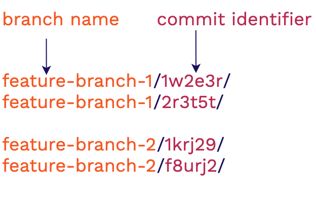
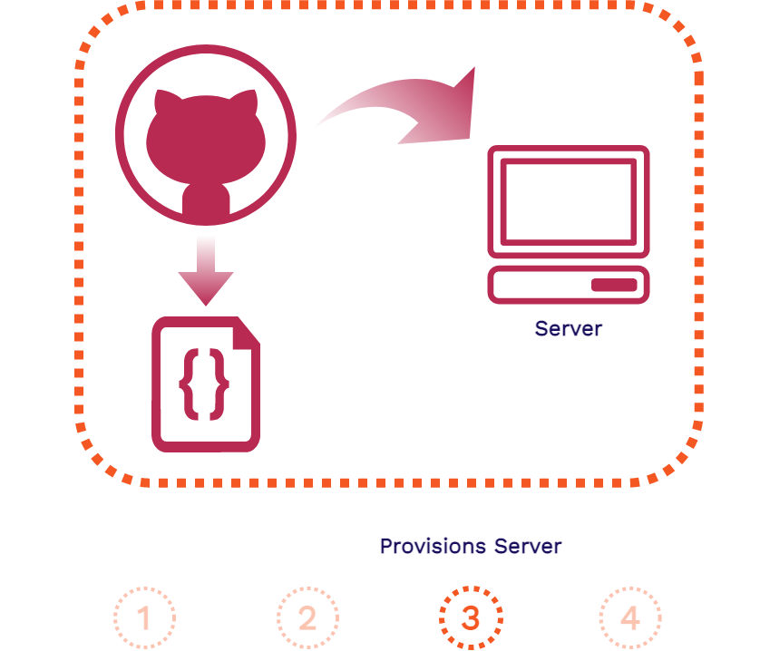

Case Study
1. What is Stagehand?
Stagehand is a drop-in solution that provides review apps for modern frontend applications. We are a framework that automatically manages review apps for your application’s GitHub repository on your own cloud infrastructure. We use AWS, GitHub Actions, and some Stagehand client-side code to set-up, deploy, manage, and teardown review apps for your frontend application.
All you have to do is install the Stagehand CLI via our NPM package and run our init command from your local repo. We will handle the rest. Then you will have review apps automatically deployed for you to view and share whenever you open a pull request on your GitHub repository.
In this case study, we describe what review apps are as well as their value for modern frontend applications. We then look over existing solutions for review apps and where Stagehand fits into the mix. Then we will look at how we built Stagehand as well as challenges we faced along the way. Finally, we will go over some future work we would like to develop.
2. What are review apps?
Stagehand automates the deployment and management of review apps for modern frontend applications. To understand why we built Stagehand, we need to understand what review apps are. In this section we will dive into review apps and the value they bring to frontend developers as well as what we mean when we say that Stagehand is for “modern frontend applications”.
2.1. Staging Environments
To see where review apps fit into the overall continuous development of a production application, let’s consider the various environments involved in that application.

Whenever code changes in a production application, such as with adding a new feature, it starts in a development environment. This environment involves a developer coding up the new feature and testing it on their local machine.
Once the new feature code is finished and tested locally, it typically moves on to a dedicated testing environment. This environment is optimized for whatever aspects of the application are being tested (specific units, end-to-end functionality, etc.).
Prior to deploying live, the new feature code is moved to a staging environment. This environment is supposed to match the production environment as closely as possibly for any final checks. Finally, the new code moves to the production environment to go live.
Review apps generally fall under the same category as staging environments, though their usefulness may expand beyond that. So it will be useful to look at staging environments in more detail.
What are staging environments? Here is a good definition:
“A staging environment (sometimes called a pre-production environment) is the environment where your code is ‘staged’ prior to being run in front of users so you can ensure it works as designed.” [12]
A staging environment can be used for quality assurance teams, automated end-to-end testing, and for product managers and/or other stakeholders to be able to validate that new features and functionality work as intended.
Consider this scenario where you are a developer of a frontend application:
The product manager wants a responsive navigation bar added to the application and you are assigned this task. After coding up and testing your new navigation bar feature, you deploy your changes to a staging environment.
In this staging environment, the product manager and other stakeholders can view your changes in a production-like environment. They can play around with the new functionality, making sure it is what they want and that everything works properly. Then, once your new feature is approved, it can be moved into production to be released.
But what if you are part of a development team that is assigned a wide variety of features. Now you, Alice, and Bob are all working on different parts of the frontend application at the same time. You are working on the navigation bar feature, Alice is working on the footer, and Bob is working on the page content:

All of these features will have to be deployed to a shared staging environment. There the new features can each be verified by the product manager and other stakeholders before being approved to go into production.
But because this environment is shared, maybe you and Alice have to wait until Bob is done using it before you can deploy and share your new features. Furthermore, you or Alice may have to clean up the staging environment if Bob made changes to it. And if your code now conflicts with Bob’s, you may have to resolve these conflicts.
This type of bottleneck in the development cycle is one of many scenarios where having review apps can be incredibly helpful.
2.2. What Are Review Apps?
Review apps are ephemeral, fully-functional versions of a production application that can be easily deployed and shared with others. Let’s take this definition apart a piece at a time:
- Ephemeral - Review apps are temporary environments that can be built and torn down at any time without affecting the production application.
- Fully-Functional - Review apps have end-to-end production-like functionality. They are temporary versions of the main application.
- Easily-Deployed - Review apps can be instantly built and deployed whenever there is a change in an application’s code, like when a new feature is added.
- Self-Contained - Review apps exist in isolation from the main production application. This allows developers to try out new features and functionality in a deployed production-like environment without touching the production code.
Consider the value of review apps for the development team scenario from above:
Your team has introduced a review app solution like Stagehand to the mix. With review apps, each developer on your team now has their own isolated environment where you can easily deploy and share your new features. You and your team no longer have to fight over a shared staging environment just to be able to quickly deploy and share your new features with others.
Each review app can be accessed via a unique shareable URL. You can share this with your product manager and even non-technical stakeholders, getting more feedback more quickly while you are developing your new feature.
Review apps also enable greater collaboration within your development team itself. As you, Alice, and Bob are coding up your new features, you can quickly deploy them with review apps and share them with each other. So you do not have to pull down each other’s code and get it running locally to collaborate.
Review apps make checking out your work in a production-like environment as you are developing as simple as possible. But what do they look like in action from a developer’s point of view?
Here on the GitHub repository for your team’s application, you have opened a pull request for your new navigation bar feature. The product manager will have to see the change and give approval before your code can move on to production.
As soon as the pull request is opened, a review app is automatically built and deployed for you. A unique URL for this particular review app is automatically posted as well. You share this review app with your product manager. She wants you to move the navigation bar icon to the other side of the page.

After making the change and making a new commit to the open pull request, a whole new review app is built and deployed. This new review app exists at the same time as the previous review app. You can even open each one via their URLs simultaneously and compare them side-by-side.
You share the link for the new review app with your product manager. She is now satisfied with the changes. You are clear to promote your new navigation bar feature to production. When this pull request is closed, all review apps associated with it will be automatically disposed of which will free up any unnecessary cloud resources.
2.3. Frontend Review Apps
2.3.1. Why Frontend Review Apps?
2.3.2. Frontend Applicaton Architecture


4. Stagehand

Stagehand is divided into 3 components, AWS Infrastructure, GitHub Actions, and Client-side code.
4.1. AWS

There are two flows through our AWS infrastructure. The first is when review apps are being created or torn down, the second is when requests to view the review apps are made.
4.1.1. S3 Bucket
The S3 Bucket is our storage solution, it is a database for files. This is where each of our review apps for a particular Stagehand application are stored in its entirety. The review apps need a way to be deciphered from one another.

To handle this we group review apps by the branch name in which the feature is being worked on and a hash of the commit. This approach helps us in two ways. The first is that the branch gives context as to what feature is being developed and it allows us to group review apps logically by feature being worked on. The commit hash identifier will then ensure that each review app has a unique namespace within the s3 bucket.
4.1.2. CloudFront

We use CloudFront as our CDN and hosting solution. All incoming HTTPS requests for review apps first go through CloudFront and then CloudFront retrieves the correct asset from the S3 Bucket and returns it to the user. The bonus of using CloudFront is that it handles securing requests with TLS and provides us with an out of the box domain to use. There’s no need to configure a DNS, get an SSL certificate, or link CloudFront to an existing domain.
4.1.3. IAM

The last AWS infrastructure piece is Identity and Access Management (IAM). This enables us to tightly secure the access to CloudFront and S3. It also ensures that the AWS credentials that we use to spin up the infrastructure can’t access any other AWS resources on the account of where this infrastructure is located. The developer who initialized Stagehand to the repository now doesn’t have to worry about what individuals who have access to the repository, whether malicious or not, may do.
4.1.4. CloudFormation
To deploy our AWS infrastructure we used CloudFormation. It allows us to use a template with listed resources, configuration, and outputs and it’ll spin up all the infrastructure we need. We didn’t need to customize each AWS stack to each Stagehand App so a template was a perfect approach. This also allows us to use the outputs that this CloudFormation Stack creation gives us and then automate setting up the users GitHub account with the proper configuration. Another bonus of having all of our resources grouped together is not only the ease in spinning it up, but also in tearing it down.
4.2. Github Actions
4.2.1. Why Does Github Actions Exist?
To understand what GitHub Actions is and why it exists, we’ll go over a very common scenario for a GitHub user: You want to build your Gatsby (a framework for building frontend apps) application every time a commit to your codebase is made. To make this happen what would you need to do?


The repository itself can’t run code, we need some place for the Gatsby build to be executed.

We can solve this by having a server somewhere, which will receive a notification from GitHub letting us know when to start the build process. Then we’d pull down the code from the repository onto the server and then run the build command. GitHub noticed that this was an incredibly common flow of events its users would want to execute, running code in the context of their repository. GitHub wanted to devise a way for you to run code directly within your repository, eliminating the need to spin up or configure your own server. This inspired the creation of GitHub Actions.

There is now a way to run code within the context of your repository. GitHub provides each repository with a server that it can use the run code on in response to GitHub events.
If you recall, the events we’re concerned about (pull requests, commits) are repository level events. GitHub Actions is perfect for our use case because we can leverage the server GitHub provides us to build our review apps.
4.2.2. Using GitHub Actions
The only piece of information that needs to be provided to GitHub so that it knows when and how to run the code is a Workflow file. These Workflow files will live in your GitHub repository under a special folder .github to alert GitHub to check for the workflow files. We provide all the workflow files that a user of Stagehand needs during setup.




The above is the flow of a GitHub Action, it is separated into four steps. If we were to map each of these steps to a Stagehand's Create Review App workflow it would look like this:
- A pull request is created in your repository, creating a pull request event
- GitHub will see that the Create workflow file inside your repository is listening for this event to occur, triggering the workflow to begin
- GitHub will read the workflow file and provision a server for you set up with the appropriate environment credentials
- GitHub server will execute the contents of the Create workflow. This will build the review app, copy the build to S3, and publish a comment containing the URL of the review app
We also provide one more workfile that will be triggered when a pull request is closed or merged. This will tear down any review apps associated with that branch, and invalidate CloudFront’s cache so the review apps will no longer be accessible.
4.3. Client Side Code

There are three fundamental pieces to our client side code. The customizable dashboard, the iframe to serve the review app content, and the service worker to handle routing. All this code lives in an HTML file and two JavaScript files that we provide to every review app.
4.3.1. Dashboard and Iframe

The HTML file provides the scaffolding of a dashboard. The Stagehand dashboard visually sits on top of the review app to give extra context to the viewer of the review app and reminding them that they’re looking at a review app, not production. While the information that our dashboard gives at the moment is a banner, this setup allows the user of Stagehand to easily build out a custom dashboard to do and say whatever they want. This could be as simple as building out dashboard content, host it elsewhere and link to it in your provided Stagehand HTML file. Alternatively, it can be built directly within the provided HTML/JavaScript files.

We use an iframe to get this dashboard overlay effect.
“The iframe represents a nested browsing context, embedding another HTML page into the current one.” [FIX LATER]
It is basically a webpage within another webpage, created with just a simple HTML tag. It can be styled so that it looks as though it’s the main window, which is how we achieve this. Another feature of an iframe is that if the main window is the same origin (ie https://1245.cloudfront.net) as the iframe, then the main window can access certain properties of the iframe like its content and location.
4.3.2. Service Workers and Routing
Those familiar with Service Workers may notice that we’re using them in an unorthodox way. More often than not they’re used for Progressive Web Apps (*link to PWA explanation*) and take advantage of many browser APIs like the built in Cache and Database options. All this information about Service Workers is not important to understand how we’re using them, so we’re going to talk about them only in the context that they’re being used.
A Service Worker is a browser feature, it is not infrastructure, it is code that is run inside a browser process. Once it is registered to a domain (ie 1245.cloudfront.net) it intercepts all requests going in and out of that domain. We can both alter the request and response in the cycle. In our case we’re going to intercept HTTP requests.
The important takeaways for how we’re using them is to know that they are an in-browser proxy, and they are able to send and receive messages to the domain they are registered to.
4.3.3. Viewing the Review App

Before we begin walking through the client request cycle, we need to revisit the GitHub Server. Now that we have client files in the mix, we need to add both the review app build and the Stagehand client files to the S3 Bucket. This means that each review app will have its own version of the Stagehand Client files. These client files are very small and have no outside dependencies.
Once our app is built and all of the appropriate review app files are in the s3 bucket we can view the review app.


- Client fetches the Stagehand HTML file provided to each review app
- Client renders both the dashboard and the iframe that will later house the review app
- Stagehand JavaScript and Service Worker files are requested.
- Service Worker begins installation
It's possible that the service worker may need extra time to register. A simple refresh will do the trick. The service worker only needs to install once per each Stagehand application, not once per review app.


- All HTTP requests will be intercepted by the service worker
- Service worker will fix the requested path and forward the request to CloudFront
- Service worker will forward the response to the iframe, populating it with the assets it needs
5) Existing solutions
In the previous section, we described how a real-time service such as River fits in with an existing application. At this point, before going into how we actually built River, we want to say a word about some of the existing solutions. Once an application developer has decided that a separate real-time service would work well for the needs of his application, he has quite a few options.
4.4) CLI

H
5) Challenges
I
5.1) Relative Paths
Broadly[16],
5.2) Github Action Optimizations
Broadly[17],
L
6) Future Work
W
Quote. [26]

ulimits were increased to the following:
"ulimits": [
{
"name": "nofile",
"softLimit": 50000,
"hardLimit": 65536
}
]
Once this was updated, the test ran without any errors.
7) References
- https://pragprog.com/titles/sbsockets/real-time-phoenix/
- MDN on SSE. The limit per browser is set to 6 open connections. This is not an issue when using SSE with HTTP/2, since HTTP/2 allows multiplexing, see https://www.infoq.com/articles/websocket-and-http2-coexist/